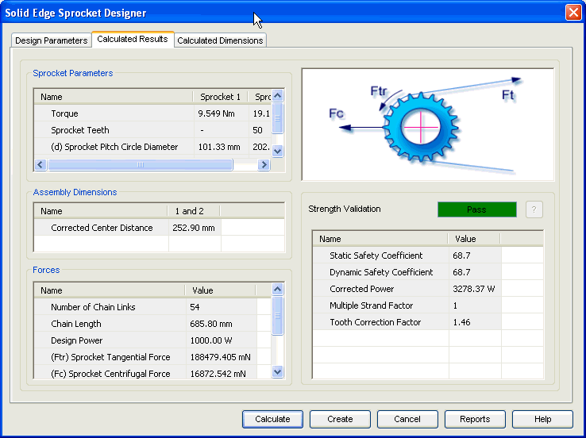

Sprocket Calculated Results tab
The Calculated Results tab provides the options you use to view results of calculation.

Displays sprocket parameters such as pitch circle diameter, angle of contact and sprocket teeth number.
Displays the outputs related to the sprocket assembly such as transmission ratio, center distance between the sprockets.
Displays the results related to load carrying capacity of the chain.
Displays the overall performance of the sprocket in terms of Pass/Fail. You can also review the allowable pressure and the safety coefficients displayed in this area.
Use the ? button to access the Strength Validation Failure window which displays the design failure reasons in case strength validation fails.